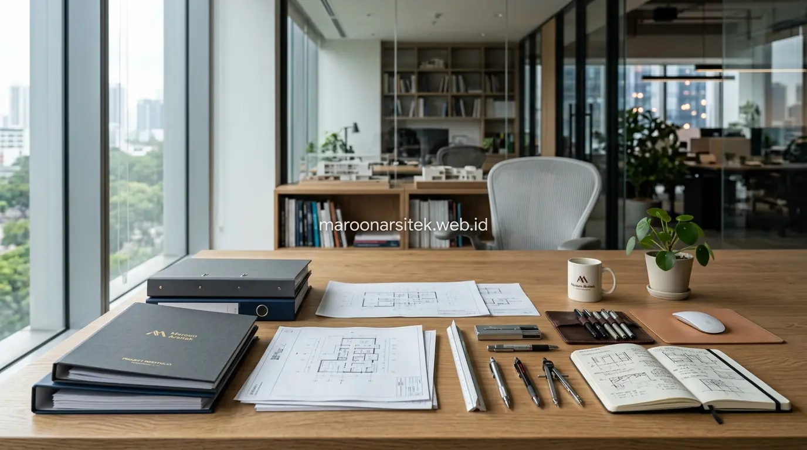
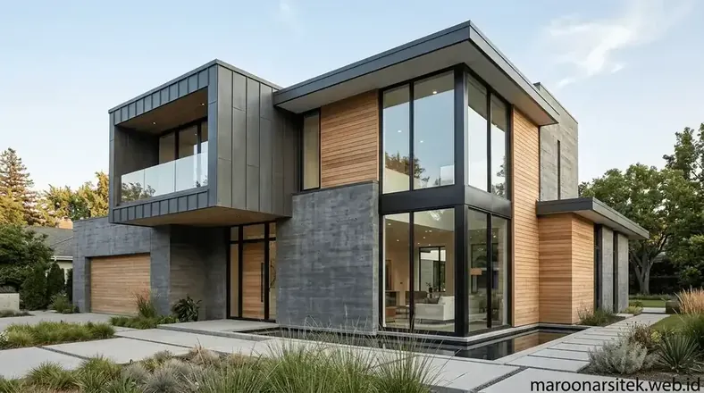

Selain skema persentase dan tarif per meter persegi, biaya jasa arsitek juga dipengaruhi oleh reputasi dan pengalaman arsitek, jenis penyedia jasa yang dipilih, serta skema pembayaran yang disepakati sepanjang proyek berlangsung. Maroon Arsitek menjelaskan faktor-faktor tambahan ini agar calon klien memiliki gambaran yang lebih lengkap sebelum memutuskan berkonsultasi.
Selain metode perhitungan dasar, terdapat faktor lain yang turut memengaruhi besaran biaya jasa arsitek namun sering tidak dipahami calon klien yang baru pertama kali menggunakan jasa ini. Bagian berikut menguraikan tiga faktor tambahan yang memengaruhi biaya jasa arsitek rumah.
Pengaruh Reputasi dan Pengalaman Arsitek terhadap Besaran Tarif
Reputasi dan pengalaman arsitek turut memengaruhi besaran tarif yang dikenakan, di mana arsitek dengan rekam jejak proyek lebih banyak dan portofolio yang lebih dikenal umumnya mematok tarif lebih tinggi dibanding arsitek yang baru memulai praktik profesionalnya. Faktor ini mencerminkan nilai tambah dari pengalaman dalam menangani berbagai kompleksitas proyek.
Pengalaman menangani berbagai jenis proyek memberikan arsitek kemampuan mengantisipasi tantangan teknis yang mungkin belum terpikirkan oleh arsitek dengan pengalaman lebih terbatas, sehingga nilai tambah ini tercermin dalam tarif yang dikenakan kepada klien.
Reputasi yang terbangun dari testimoni klien sebelumnya juga memberikan jaminan kualitas tambahan bagi calon klien baru, meski hal ini biasanya sejalan dengan tarif yang lebih tinggi dibanding penyedia jasa yang belum memiliki rekam jejak yang mapan.
Nilai Tambah Pengalaman dalam Mengantisipasi Tantangan Teknis
Kebutuhan pemahaman atas variasi tarif berdasarkan pengalaman dijawab melalui penjelasan bahwa arsitek berpengalaman cenderung lebih efisien mengantisipasi tantangan teknis, mengurangi risiko kesalahan yang berpotensi menimbulkan biaya tambahan di kemudian hari.
Nilai tambah ini menjadi pertimbangan penting bagi klien saat mengevaluasi apakah tarif yang lebih tinggi dari arsitek berpengalaman sepadan dengan pengurangan risiko yang diperoleh selama proses perencanaan dan konstruksi berlangsung.
Perbedaan Biaya antara Arsitek Independen dan Studio Besar
Arsitek independen umumnya menawarkan tarif yang lebih fleksibel dibanding studio arsitek besar dengan tim dan fasilitas lebih lengkap, karena struktur biaya operasional yang berbeda turut memengaruhi besaran tarif yang dapat ditawarkan kepada klien. Perbedaan ini penting dipahami saat membandingkan penawaran dari berbagai jenis penyedia jasa arsitek.
Studio besar umumnya menawarkan tim multidisiplin yang dapat menangani proyek lebih kompleks secara menyeluruh, namun struktur biaya operasional yang lebih besar turut tercermin dalam tarif yang dikenakan kepada klien dibanding arsitek independen.
Pemilihan antara arsitek independen dan studio besar sebaiknya mempertimbangkan kompleksitas proyek dan kebutuhan dukungan tim, bukan semata-mata berdasarkan perbandingan tarif tanpa mempertimbangkan kesesuaian kapasitas dengan skala proyek yang direncanakan.

Kesesuaian Kapasitas Penyedia Jasa dengan Skala Proyek
Kebutuhan pemilihan yang tepat dijawab melalui pertimbangan kesesuaian kapasitas penyedia jasa dengan skala dan kompleksitas proyek, memastikan klien tidak membayar lebih untuk kapasitas yang melebihi kebutuhan, maupun sebaliknya kekurangan dukungan untuk proyek yang kompleks.
Pertimbangan ini membantu klien membuat keputusan yang lebih rasional, menyeimbangkan antara anggaran yang tersedia dengan kebutuhan dukungan teknis yang sesuai skala proyek yang akan dikerjakan.
Skema Pembayaran Bertahap untuk Jasa Arsitek
Skema pembayaran bertahap untuk jasa arsitek umumnya mengikuti progres pekerjaan, mulai dari tahap konsep, pengembangan desain, hingga penyelesaian gambar kerja final, memberikan kepastian bagi kedua belah pihak mengenai kewajiban finansial pada setiap tahap. Skema ini membantu klien mengelola arus kas selama proses perencanaan berlangsung.
Setiap tahap pembayaran dikaitkan dengan penyelesaian deliverable tertentu, seperti persetujuan konsep awal atau penyerahan gambar kerja detail, memberikan kejelasan mengenai apa yang akan diterima klien pada setiap tahap pembayaran yang dilakukan.
Skema ini juga memberikan perlindungan bagi arsitek, memastikan kompensasi diterima sesuai dengan pekerjaan yang telah diselesaikan, sekaligus memberikan klien kepastian bahwa pembayaran yang dilakukan sebanding dengan hasil kerja yang diterima pada tahap tersebut.
Kaitan Pembayaran dengan Deliverable pada Setiap Tahap
Kebutuhan kejelasan atas apa yang diterima pada setiap pembayaran dijawab melalui pengaitan skema pembayaran dengan deliverable spesifik, seperti gambar konsep atau dokumen gambar kerja, yang diserahkan pada setiap tahap penyelesaian pekerjaan.
Kaitan ini memberikan transparansi bagi kedua belah pihak, memastikan klien memahami dengan jelas apa yang akan diterima pada setiap tahap pembayaran sebelum menyepakati kerja sama dengan penyedia jasa arsitek.
